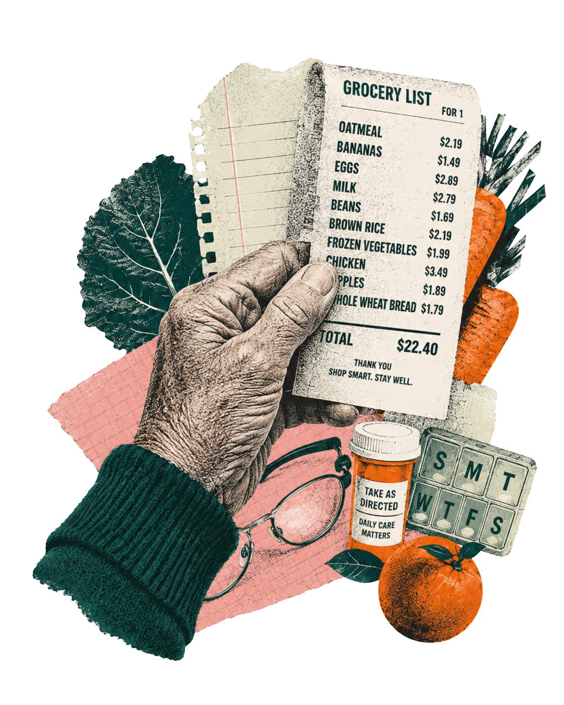
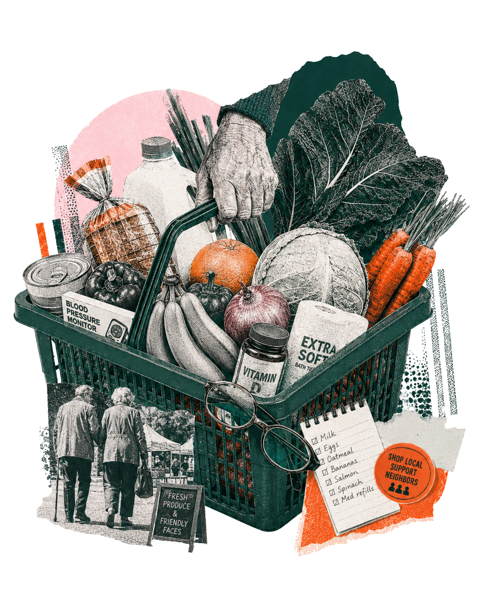

Store Next Door

A low-pressure shopping field begins in everyday life.
Chapter 01
The New Everyday
Social Background / Community System

Daily Route
The route begins before entering the store.
Everyday shopping is shaped by distance, pace, waiting, and the small decisions that happen before the supermarket door.
Ageing Is Not A Future Issue
Everyday Shopping Depends On Access
The Route Becomes Service


Community access turns a supermarket trip into a service journey.
Everyday Frictions
Small Frictions Add Up
Shopping pressure often appears through ordinary details, not dramatic barriers.

small type
unclear prices
long walking distance
slow decision-making
service anxiety
Service Node
More Than A Store
A community supermarket can gather daily needs, health routines, trust, and support into one low-pressure field.

access
comfort
clarity
trust
dignity